CSE3202 / SE 491 — 12th Project Assessment · Submission: May 8, 2026 Repository: https://github.com/ahmefarouk1234d/smarthome
A simplified Smart Home Automation System in Java. The user navigates rooms, controls devices (lights, thermostats, locks, cameras), applies whole-home automation modes, views past events, and undoes recent actions through an intuitive JavaFX UI.
Users can: list rooms · enter a room and view its devices · turn devices on/off · lock/unlock doors · adjust thermostat temperature · apply automation modes (Eco/Sleep/Away) · add new devices · wrap a device with a logging decorator · view persisted device events · undo the most recent action · receive real-time state-change notifications.
SmartHomeHub — Singleton + Strategy Context + Iterator aggregate.
Attrs: INSTANCE, roomsById, automationMode.
Methods: getInstance(), addRoom(Room), getRoom(String),
getRooms(), enumerateRooms() : Enumeration<Room>, setAutomationMode,
applyAutomationMode(), createIterator() : RoomIterator.
Room — Iterator host; aggregates devices.
Attrs: roomId, name, devicesById.
Methods: addDevice(Device), removeDevice(String), getDevice(String),
devices() : List<Device>, enumerateDevices() : Enumeration<Device>.
Device (abstract) — Subject (Observer), Receiver (Command), Component (Decorator).
Attrs: id, name, poweredOn, observers.
Methods: turnOn, turnOff, attach(Observer), detach, notifyObservers(String).
Concrete subclasses: Light (setBrightness(int)), Thermostat
(setTemperature(double)), Lock (lock()/unlock()), Camera. Each has
two family variants (Version1*, Version2*) produced by the
corresponding DeviceFactory.
DeviceFactory (abstract) — Abstract Factory with four Factory Methods:
createLight, createThermostat, createDoorLock, createCamera.
Concrete subclasses: Version1DeviceFactory, Version2DeviceFactory.
AutomationMode (interface) — Strategy. Methods: name(), apply(SmartHomeHub).
Concretes: EcoMode (24°C, dim 50%), SleepMode (off + lock + 20°C),
AwayMode (off + lock + arm + 15°C).
DeviceCommand (interface) — Command. Methods: execute(), undo(),
describe(). Six concretes (TurnOn/TurnOff/SetTemperature/Lock/Unlock/SetAutomationMode).
CommandInvoker runs commands and owns the undo stack.
HomeController — Facade; the UI's only entry point. Methods:
turnOnDevice/turnOffDevice/lockDevice/unlockDevice/setTemperature/setAutomationMode/getDevicesForRoom/getEventHistory/getCommandHistory/undoLastAction.
Database — Singleton wrapping the SQLite connection. getInstance(),
getConnection(). Five DAOs (UserDAO, RoomDAO, DeviceDAO,
DeviceEventDAO, CommandsLogDAO) isolate SQL.
A more detailed per-class catalogue is in the companion document
class-catalog.md.
Full rendered class diagram (PlantUML — every class, all 9 patterns, every relationship):
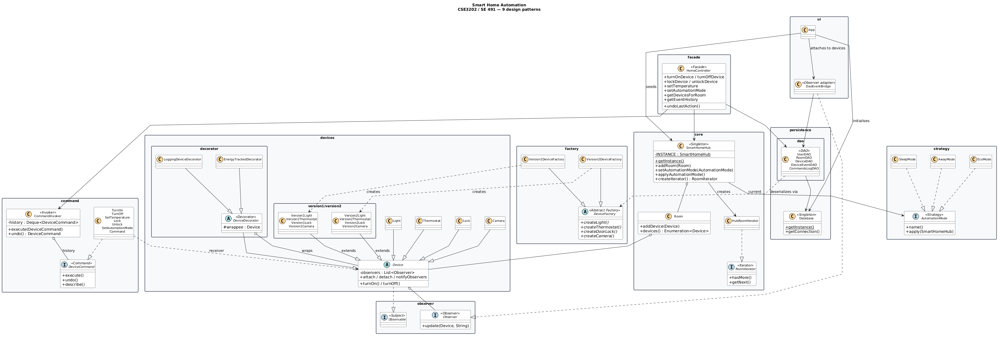
Per-pattern detailed class diagrams follow. Each diagram is shown side-by-side with its explanation.
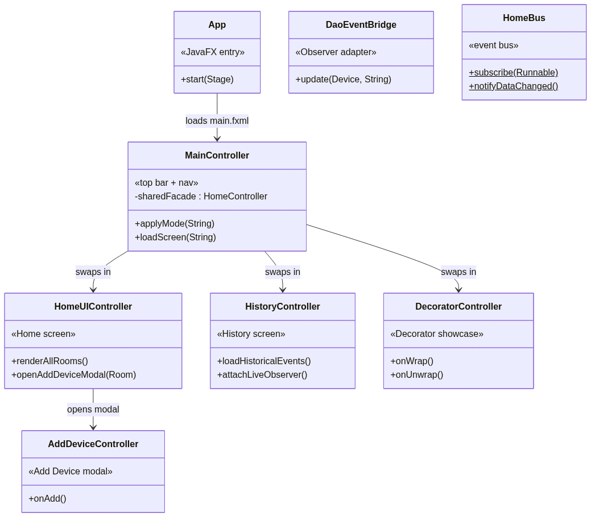 |
The UI is composed of App (JavaFX entry),
MainController (top bar + nav), three screen controllers
swapped through a central host (HomeUIController,
HistoryController, DecoratorController), the
AddDeviceController modal, and the
DaoEventBridge boundary adapter that forwards device
events to the persistence layer. |
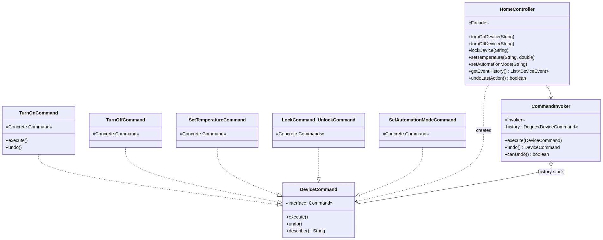 |
HomeController (Facade) is the only class the UI calls.
Each mutation routes through CommandInvoker, which executes
a concrete DeviceCommand (six exist:
TurnOn / TurnOff / SetTemperature / Lock / Unlock /
SetAutomationMode) and pushes it onto the undo stack. The Invoker
imports zero domain classes — only DeviceCommand. |
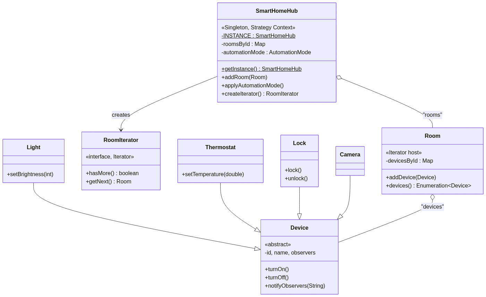 |
SmartHomeHub (Singleton + Strategy Context) owns the
rooms. Room is the Iterator host —
enumerateDevices() returns Enumeration<Device>
per the rubric line. RoomIterator provides the custom GoF
Iterator interface (hasMore(), getNext()). |
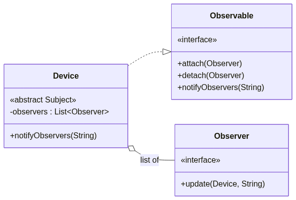 |
Device implements Observable; observers
attach via attach(Observer) and receive
update(Device, String) calls when state changes. UI
controllers, history feeds, and DaoEventBridge are all
observers — each independent of the others. |
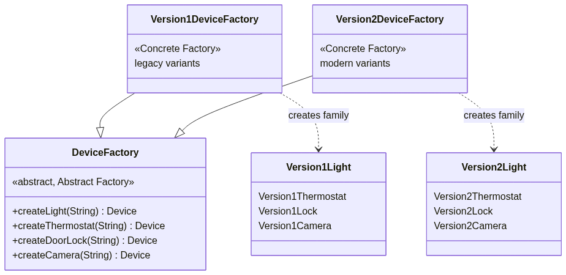 |
DeviceFactory declares four Factory Methods
(createLight, createThermostat,
createDoorLock, createCamera).
Version1DeviceFactory and Version2DeviceFactory
each implement all four methods, returning their family's variants —
Liskov-substitutable, no UnsupportedOperationException stubs. |
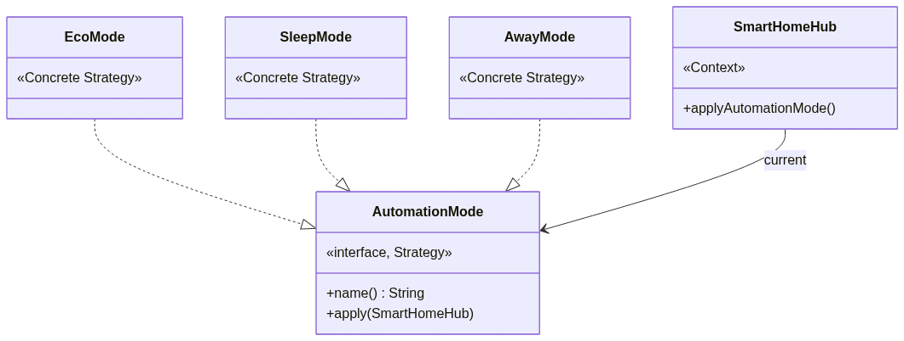 |
AutomationMode is the Strategy interface.
EcoMode, SleepMode, and AwayMode
are concrete strategies. SmartHomeHub is the Context — it
holds the active strategy and exposes
applyAutomationMode() so callers never need to know which
concrete mode is loaded. |
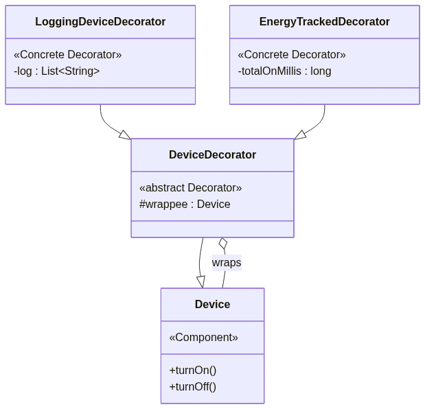 |
DeviceDecorator wraps a Device (the
Component) and forwards every method to it.
LoggingDeviceDecorator and
EnergyTrackedDecorator override individual methods to add
cross-cutting behaviour (logging, energy tracking) without modifying any
device class. |
Dependencies flow downward only — UI never imports DAOs directly; the Domain layer is self-contained and reusable in isolation.
Objects.requireNonNull, type-checked downcasts in Facade,
factory UUID deduplication). Mode-change requests show a confirmation
dialog. Commands capture pre-state for reliable undo(). DAOs use
PreparedStatement exclusively (no SQL injection).| # | Pattern | Where it lives | Required methods |
|---|---|---|---|
| 1 | Singleton | core.SmartHomeHub, persistence.Database |
getInstance(), private constructor |
| 2 | Iterator | Room.enumerateDevices(), SmartHomeHub.enumerateRooms(), core.RoomIterator |
enumerateDevices() : Enumeration<Device>, enumerateRooms() : Enumeration<Room>, hasMore(), getNext() |
| 3 | Observer | observer.Observer/Observable, devices.Device |
attach, detach, notifyObservers(String), update(Device, String) |
| 4 | Abstract Factory + Factory Methods | factory.DeviceFactory + Version1/Version2DeviceFactory |
createLight, createThermostat, createDoorLock, createCamera |
| 5 | Strategy | strategy.AutomationMode + 3 modes; SmartHomeHub is the Context |
name(), apply(SmartHomeHub) |
| 6 | Command | command.DeviceCommand + 6 concretes; CommandInvoker |
execute(), undo(), describe(); CommandInvoker.execute/undo/canUndo |
| 7 | Decorator | devices.decorator.DeviceDecorator + 2 wrappers |
wrappee field; overridden turnOn/turnOff |
| 8 | DAO | persistence.dao.* (5 DAOs) |
insert, findById, findByRoom, findRecent |
| 9 | Facade | facade.HomeController |
turnOnDevice, setAutomationMode, getEventHistory, undoLastAction, … |
Justifications. Singleton: Hub and Database are global state; multiple
instances would corrupt device state and connections. Iterator: returns
Enumeration per the brief's exact wording, plus a custom GoF-style
RoomIterator. Observer (push): devices push events to UI controllers,
the history feed, and DaoEventBridge (persistence) without coupling.
Abstract Factory: two coordinated families (Version1/Version2), every
factory implements every method (Liskov-substitutable). Strategy: hub
holds the active AutomationMode; new modes plug in without touching
hub code. Command: every action is an object with reliable undo;
Invoker imports zero domain classes. Decorator: stackable wrappers add
behaviour without modifying any device class. DAO: SQL isolated behind
plain Java APIs; domain layer never imports java.sql. Facade:
single UI entry point routing through subsystems.
| Aspect | Push (chosen) | Pull |
|---|---|---|
| Notify signature | update(Device d, String event) |
update(Device d) |
| Performance | Lower latency | Slightly higher (round-trip) |
| Extensibility | New fields force observer changes | Zero-cost field additions |
| Cost | Larger payload at notify | Smaller notify payload |
| Maintainability | Simple observers | Tight subject-coupling |
Justification: the small fixed event vocabulary (TURNED_ON, LOCKED,
TEMP_CHANGED, …) makes the push payload tiny and stable. Push gives lower
UI-refresh latency and keeps DaoEventBridge trivial.
| Aspect | Factory Method per type | Abstract Factory by family (chosen) |
|---|---|---|
| Class layout | One factory per device type | Abstract + 2 concrete families |
| Rubric phrasing | Partial — only Factory Methods | Full — "Abstract Factory with Factory Methods" |
| Performance | Identical | Identical |
| Extensibility | Cheap new types; expensive new families | Cheap new families; medium new types |
| Cost (LOC) | Lower per concrete factory | Slightly higher (all 4 methods per factory) |
| Maintainability | Per-factory cohesion | Family cohesion (compatible products) |
Justification: the brief explicitly demands "Abstract Factory with
Factory Methods" — both must be visible. We rejected an earlier "Comfort
vs. Security" axis because it required UnsupportedOperationException
stubs (LSP violation). Version1 / Version2 generations let every
factory implement every method meaningfully.
| Constraint | How |
|---|---|
| Modularity & expansion | Patterns + per-package boundaries; new modes / factories / commands plug in by adding one class. |
| Prevent invalid/unsafe ops | Null guards, type-checked Facade rejects, idempotent state changes, Command pre-state for undo, prepared SQL. |
| Intuitive accessible GUI | Mobile-styled, 48 px tap targets, WCAG AAA contrast, mode-change confirmation dialogs, observer-driven live refresh. |
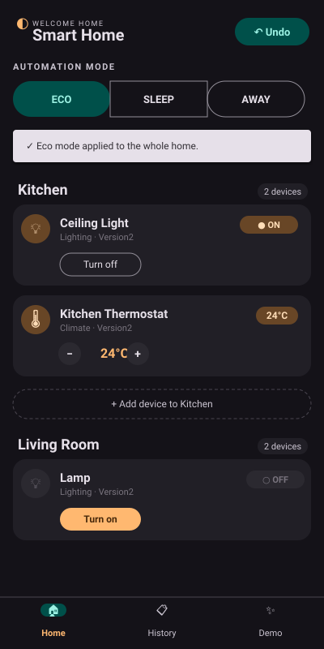 Home Rooms + device cards |
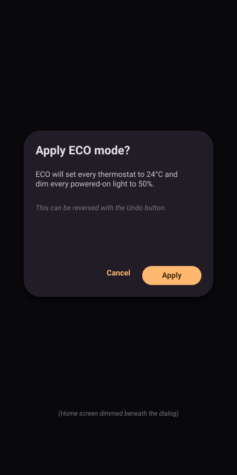 Mode confirm Strategy with consequence dialog |
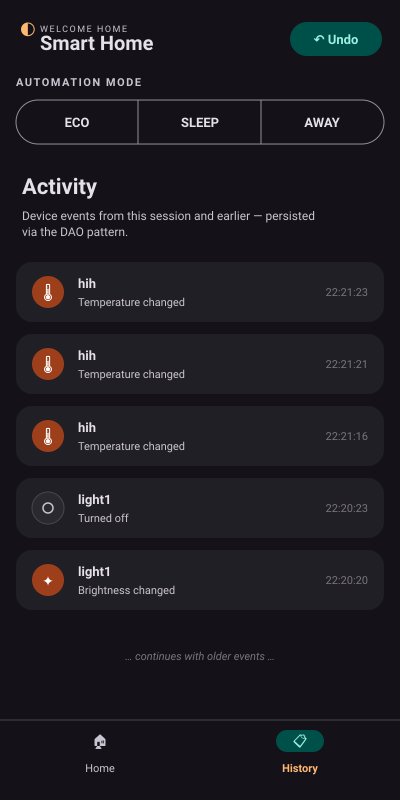 History Observer + DAO live feed |
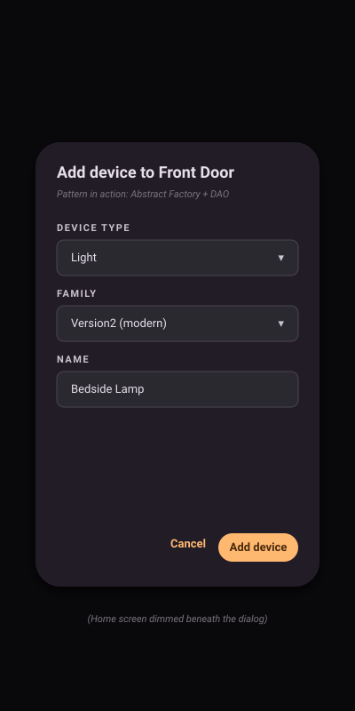 Add device Abstract Factory at runtime |
Run the GUI with ./mvnw javafx:run (window size 400×800).
Companion documents (also in the repo): class-diagram.md, class-catalog.md.